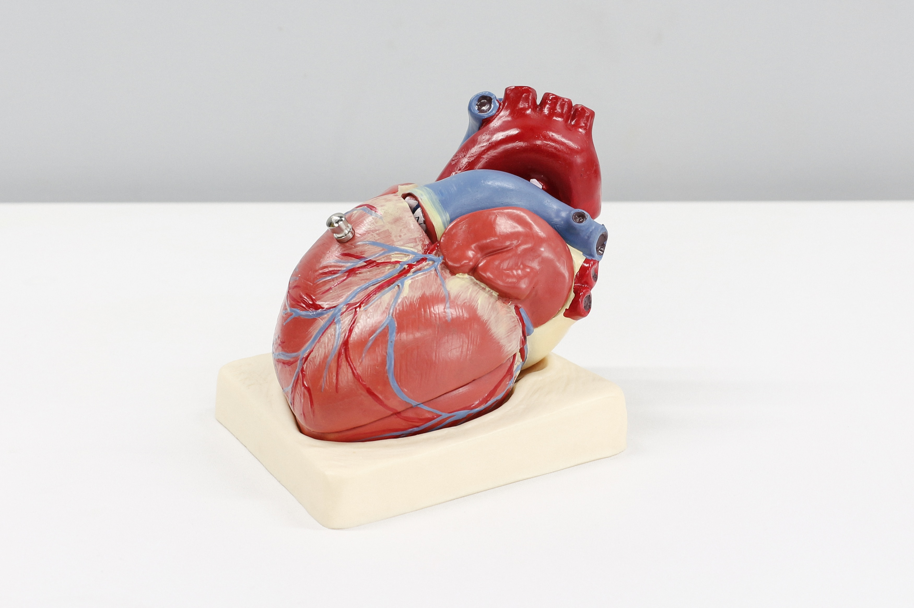

I'm a passionate data scientist who loves
basketball, traveling, K-dramas, urban planning, and video games.
I just graduated from Caltech's Data Science Bootcamp. I'm currently working on personal projects focused on Machine Learning.
Personal Projects
Stay tuned for more!
 Delayed flight visualizations and predictions for the top airlines.
Delayed flight visualizations and predictions for the top airlines.
With so many dramas to watch and so little time, I've made
3 recommenders that give other K dramas based off what's typed in.
Built a Tableau dashboard and a model predicting if a patient has diabetes based on certain diagnostic measurements in the dataset from the National Institute of Diabetes and Digestive and Kidney Diseases .

First machine learning model I created to predict risk of heart attack.
Used the Ames Iowa Housing dataset to practice performing EDA on 79 explanatory variables describing (almost) every aspect of residential homes in Ames, Iowa with the goal of predicting the selling price.
Data wrangled the NYC 311 dataset for my first try at EDA to understand patterns and visualize major types of residents' complaints to improve city services.